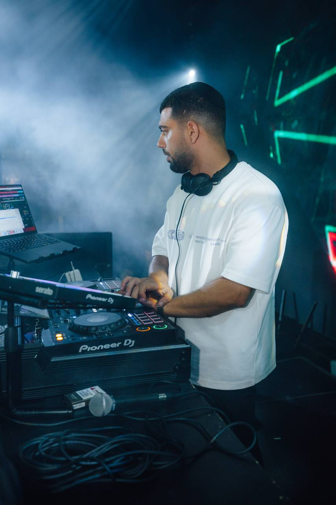

שולחים את הפרטים
תאריך, מקום וסוג האירוע מספיקים כדי להתחיל לבדוק זמינות והתאמה.
אלי מועלם | DJ ATLANTIS
אני מתמחה בחתונות חרדיות מודרניות ומתאים את המוזיקה גם לקהל דתי ודתי לאומי, לפי הטעם שלכם והאופי של המשפחות.
בעמוד הזה תוכלו להכיר אותי, לצפות בחתונה מאולמי אדמה באשדוד ולבדוק אם הגישה המוזיקלית שלי מתאימה לכם.

תיעוד מאשדוד
החתונה של חיים והודיה באשדוד. בסרטון אפשר להתרשם מהרחבה, מהקהל ומהדרך שבה המוזיקה מתקדמת בתוך האירוע.
התאמה לפני הכול
גם בתוך חתונה חרדית מודרנית אין זוג אחד שדומה לאחר. אני רוצה להבין מה אתם אוהבים, איזה אופי תרצו לריקודים ומה חשוב לכם שלא ייכנס לקו המוזיקלי.
אני בונה את הבחירות סביב הזוג, המשפחות והקהל בפועל. המטרה היא ליצור חיבור טבעי בין הרגעים המסורתיים, השירים שאתם מביאים מהבית והמוזיקה שמניעה את הרחבה.

היכרות אישית
אני האדם שמאחורי DJ ATLANTIS, זה שמכיר אתכם ומגיע לנגן באירוע שלכם. אני אוהב לבנות חיבור בין מוזיקה, אנשים ורגעים, ולהביא לעמדה גם את היצירה האישית שלי.
במקום לספר במספרים שלא אומתו, אני מזמין אתכם להתרשם מהאירועים המתועדים ומהמילים המדויקות של הזוגות שמופיעות בהמשך העמוד.
לקריאת המלצותאיך עובדים יחד
תאריך, מקום וסוג האירוע מספיקים כדי להתחיל לבדוק זמינות והתאמה.
בחתונות אני נפגש איתכם פנים אל פנים. אנחנו מדברים על הטעם שלכם ועל הדברים שחשוב לכם לשמור עליהם.
ההיערכות מבוססת על הזוג, הקהל ומסגרת האירוע, בלי להניח מראש שכל חתונה דתית צריכה להישמע אותו הדבר.
הגוון של DJ ATLANTIS
אני יוצר רמיקסים ועריכות עם הגוון האישי שלי. הם מאפשרים לי להביא למוזיקה חיבור וקצב שמזוהים עם הדרך שבה אני עובד.
אני משלב נגינה חיה במכונת תופים באירועים. אנחנו מתאימים את השילוב לאופי האירוע ולרגעים שבהם הוא מוסיף לחוויה, והוא אינו חלק קבוע בכל אירוע.
רגעים מהאירועים
בחרתי את התמונות הבאות מתוך מאגר האירועים הקיים באתר. הן מציגות אותי בעבודה ואת חוויית הבמה, ואינן מוצגות כתיעוד מקומי מאשדוד.


זוגות מספרים
״אלי הצליח להתאים את המוזיקה לקהל מגוון ושונה בצורה מדויקת. האנרגיות שלו פשוט לא נגמרות. בפגישות איתו הוא היה סבלני, הפתיע אותנו עם מוזיקה שענתה בדיוק לטעם שלנו ועזר לנו לגבש את האופי שרצינו לאירוע.״איתי ועדן
״אני ובעלי שונים מאוד בטעם המוזיקלי שלנו ולכן היה חשוב למצוא את האיזון המדויק בין הסגנון המודרני שלי לבין הטעם הקלאסי של בן הזוג. אלי הצליח ליצור את השילוב המושלם ודאג שכל האורחים שלנו יישארו על הרחבה.״יעל ואלירן
אירועים נוספים
החתונות הן מרכז העבודה שלי, ולצדן אני נותן שירות גם לחינות ולבר מצוות באשדוד ובאזור. באירועים האלה ההיכרות והתיאום מתחילים בשיחה טלפונית.
התאמה למסגרת המשפחתית ולסגנון המוזיקלי של החינה, על בסיס שיחה מקדימה.
מידע על דיג׳יי לחינה דתיתמוזיקה לאירוע משפחתי עם קהל צעיר ומבוגר, בהתאם למה שמסכמים בשיחה.
מידע על דיג׳יי לבר מצווה דתיתמידע באזור
שאלות שעוזרות לבחור
תוכלו לצפות בתיעוד מהאירועים שלי ובהמלצות אמיתיות שכבר מופיעות באתר. בעמוד הזה שילבתי את החתונה החרדית המודרנית של חיים והודיה באולמי אדמה באשדוד.
מתחילים בפנייה עם תאריך, מקום וסוג האירוע. בחתונות אני נפגש איתכם פנים אל פנים כדי להכיר ולדבר על הטעם המוזיקלי ועל הדברים שחשוב לכם לשמור עליהם.
כן. יש לי ציוד כפול לצורך גיבוי, כשכבת היערכות נוספת אם ציוד מסוים דורש החלפה.
כן. לצד חתונות אני נותן שירות גם לחינות ולבר מצוות. באירועים האלה ההיכרות והתיאום מתחילים בשיחה טלפונית.
לא בהכרח. אני יוצר רמיקסים ועריכות ומשלב נגינה חיה במכונת תופים, אבל אופן השילוב נקבע לפי האירוע ולא מוצג כחלק קבוע בכל שירות.
שלחו לי בוואטסאפ תאריך, מקום וסוג האירוע, ומשם נוכל להתחיל לבדוק התאמה וזמינות.
פנייה פשוטה
שלחו לי בוואטסאפ את התאריך, המקום וסוג האירוע. הכפתור יפתח שיחה איתי, וההודעה תישלח רק אחרי שתאשרו אותה בוואטסאפ.